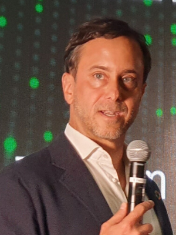

Mr Bradley Busetto
Director,
UNDP Global Centre for Technology, Innovation and Sustainable Development
About the Speaker
Bradley leads the newly-established UNDP Global Centre for Technology, Innovation and Sustainable Development in Singapore.
Bradley is regarded as a pioneer in creating and scaling innovative financing and business models for sustainable development. Bradley set up the UN’s first social venture incubator and impact investment fund, as well the world’s first national SDG Innovation Lab, during his tenure as UN RC/UNDP RR in Armenia (2013 - 2018).
This work was recognized by the Future of Innovation Summit (co-hosted by Stanford University/Rockefeller Foundation). On the behalf of the international community in Armenia, Bradley also led a sensitive electoral assistance program that helped pave the way for the first free, and fair elections in the country’s history. He was awarded the Medal of Honour from the Minister of Foreign Affairs of Armenia.
Directly prior to his appointment in Singapore, he helped lead the design of UNDP’s pioneering flagship innovation lab network, and also helped craft the SDG Fund for the United Nations. Previously with the UN, Bradley served in humanitarian missions in Indonesia, Iraq, Bosnia-Herzegovina and Kosovo.
In addition to his United Nations service, Bradley led the expansion of international operations for the Wellcome Trust, the leading global health foundation. He also worked in leadership roles in banking and management consulting and co-founded a start-up. The California native holds a BA and a master’s degree in philosophy from Stanford University, where he graduated with honours.
Director,
UNDP Global Centre for Technology, Innovation and Sustainable Development
Keynote Title: Partnerships that enable Technological Innovation in advancing the SDGs
Partnerships and collaboration between peoples, organisations and countries are always crucial to enable the innovation of technological solutions for sustainable development, even more so now given the challenges of
COVID-19, where we see greater temptation and tendency towards individualistic pathways. Young leaders have a crucial role to play in exercising cross-cultural collaboration to make the world a better place.
About the Speaker
Bradley leads the newly-established UNDP Global Centre for Technology, Innovation and Sustainable Development in Singapore.
Bradley is regarded as a pioneer in creating and scaling innovative financing and business models for sustainable development. Bradley set up the UN’s first social venture incubator and impact investment fund, as well the world’s first national SDG Innovation Lab, during his tenure as UN RC/UNDP RR in Armenia (2013 - 2018).
This work was recognized by the Future of Innovation Summit (co-hosted by Stanford University/Rockefeller Foundation). On the behalf of the international community in Armenia, Bradley also led a sensitive electoral assistance program that helped pave the way for the first free, and fair elections in the country’s history. He was awarded the Medal of Honour from the Minister of Foreign Affairs of Armenia.
Directly prior to his appointment in Singapore, he helped lead the design of UNDP’s pioneering flagship innovation lab network, and also helped craft the SDG Fund for the United Nations. Previously with the UN, Bradley served in humanitarian missions in Indonesia, Iraq, Bosnia-Herzegovina and Kosovo.
In addition to his United Nations service, Bradley led the expansion of international operations for the Wellcome Trust, the leading global health foundation. He also worked in leadership roles in banking and management consulting and co-founded a start-up. The California native holds a BA and a master’s degree in philosophy from Stanford University, where he graduated with honours.